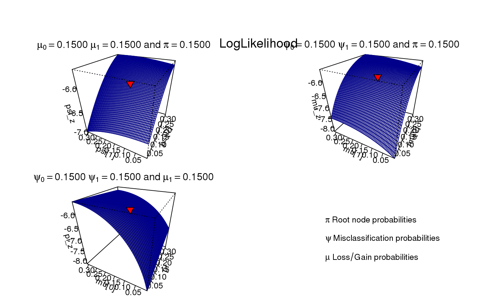

Plot LogLikelihood function of experimental data
plot_LogLike(x, ...) # S3 method for aphylo_estimates plot_LogLike(x, ...) # S3 method for default plot_LogLike(x, psi_range = c(1e-05, 0.3), mu_range = c(1e-05, 0.3), Pi_range = c(1e-05, 0.3), psi = rep(mean(psi_range), 2), mu = rep(mean(mu_range), 2), eta = c(1, 1), Pi = mean(Pi_range), nlevels = 30, plotfun = persp, par.args = list(mar = c(1, 1, 1, 1), oma = c(0, 0, 4, 0)), theta = -pi * 20, shade = 0.7, border = "steelblue", phi = 30, scale = TRUE, ...)
| x | An object of class |
|---|---|
| ... | Aditional parameters to be passed to |
| psi_range | Numeric vector of length 2. Domain of \(psi\). |
| mu_range | Numeric vector of length 2. Domain of \(mu\). |
| Pi_range | Numeric vector of length 2. Domain of \(pi\). |
| psi | Numeric vector of length 2. Misclasification probabilities. (see |
| mu | Numeric vector of length 2. Gain/loss probabilities (see |
| eta | Numeric vector of length 2. Annotation bias probabilities (see |
| Pi | Numeric scalar. Root node probability of having the function (see |
| nlevels | Integer scalar. Number of levels of each parameter to create. |
| plotfun | Function. Either |
| par.args | List of arguments to be passed to |
| theta | Passed to |
| shade | Passed to |
| border | Passed to |
| phi | Passed to |
| scale | Passed to |
# Loading data data(fakeexperiment) data(faketree) O <- new_aphylo(fakeexperiment[,2:3], faketree) # Nice personalized plot plot_LogLike(O, nlevels = 60, plotfun = persp, theta = -pi*20, shade=.7, border="darkblue", phi=30, scale=TRUE, par.args = list(mar=c(1, 1, 1, 1), oma=c(0,0,4,0)), ticktype = "detailed")# Adding title mtext( "LogLikelihood", side=3, outer=FALSE, line = 2, cex=1.25)